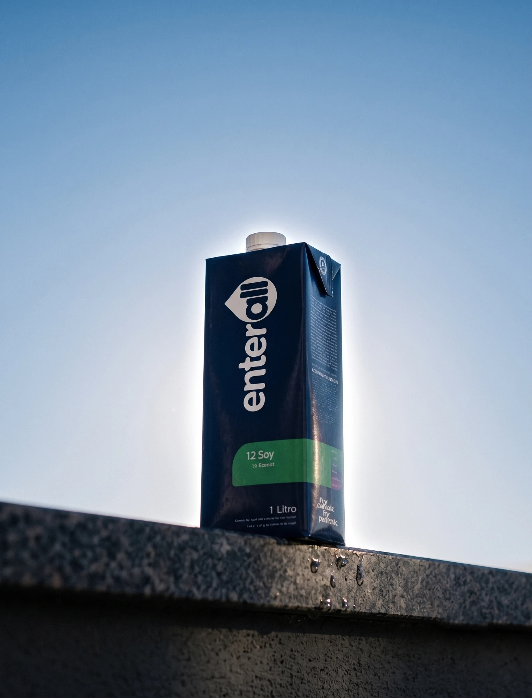
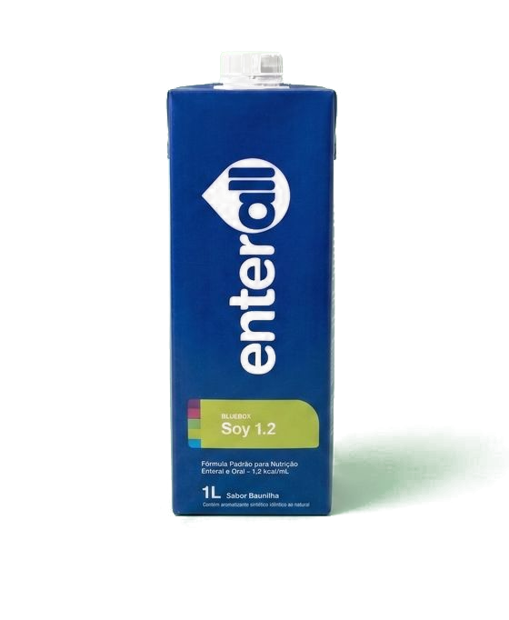
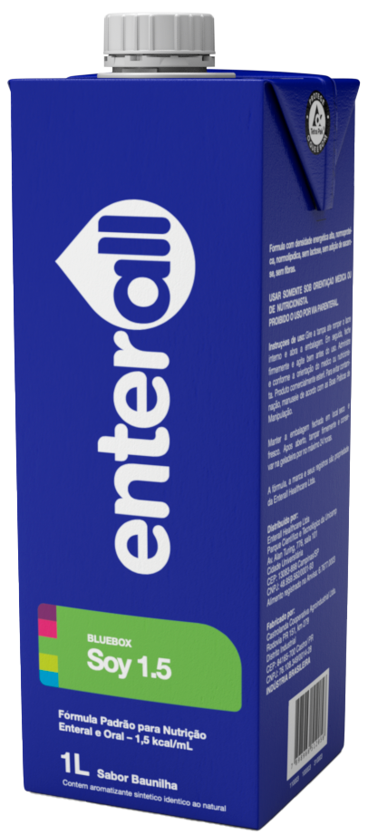

Fórmulas completas que entregam mais em todas as áreas da vida do paciente
Em mais de 10 anos de desenvolvimento, entramos no mercado brasileiro para entregar o melhor para todos.
O que nos faz diferenteUtilização dos mais altos índices de MPC nos principais produtos do portfólio, entregando o melhor tratamento comprovado cientificamente.
Inovação técnica pensada para facilitar a vida do enfermeiro no hospital ou do familiar em casa. A aplicação tem que ser prática, intuitiva e segura.
Diferentes linhas de produto de acordo com a necessidade: alta performance, vegetarianas ou melhor custo-benefício.

Soluções de excelência nutricional para todos os casos.
Linha formulada com proteína concentrada de leite (MPC) – 80% caseína e 20% whey protein.
Linha formulada com proteína isolada de soja (SPI), que possui mais alto valor biológico e PDCAA entre as proteínas vegetais.
Nutrição especializada acessível, com qualidade e segurança para facilitar a adesão à terapia nutricional enteral.
Formulações inovadoras para transformar a vida de todos envolvidos com nutrição intensiva.
Fim dos entupimentos de sondas e perda de valor nutricional com o tempo.

Proteína, carga osmótica e lipídio calibrados por indicação.
26 vitaminas e minerais, mais colina, em cada mililitro.
Leite, soja e acesso. Densidades de 1,0 a 1,5 kcal/mL.
Embalagem asséptica de 1 L, sem reconstituição.
Dados do Guia de Produtos 2025. Indicação caso a caso, pelo profissional de saúde prescritor.
Deslize para comparar →
| Eixo | BlueBox MaxReferência em qualidade proteica | BlueBox SoyIntolerância e escolha vegetal | Intake BasicAcesso sem abrir mão do essencial |
|---|---|---|---|
| Fonte de proteína | MPC ultrafiltrada · 80% caseína · 20% whey | Isolada de soja (SPI) | Isolada de soja (SPI) |
| Proteína (% do VET) | 17% | 18% | 11% |
| Qualidade proteica documentada | Maiores índices de valor biológico e PDCAA documentados na literatura científica para proteína do leite | Maior valor biológico e PDCAA entre as proteínas vegetais — qualidade comparável às melhores proteínas animais | Mesma fonte do Soy, em concentração menor |
| Perfil lipídico (TCM) | 26,5% (1.5) · 35,4% (1.2) | 26,5% (1.5) · 35,2% (1.2) | 10% (1.5) — predomínio de óleo de canola |
| Osmolaridade (tolerância GI) | 199–264 mOsm/L — a mais baixa do portfólio | 230–366 mOsm/L | 165–246 mOsm/L |
| Colesterol | 4,2 mg/100 mL | 0 mg | 0 mg |
| Ômega 3 (100 mL, versão 1.5) | 146 mg | 146 mg | 280 mg — a mais alta do portfólio |
| Fibra | ❌ | Fiber 1.2: 22 g/L (50% solúvel · 50% insolúvel) | ❌ |
| Alérgeno | Leite | Soja | Soja |
| Indicação-alvo | Máxima tolerância e adequação proteica: pacientes críticos, pós-cirúrgicos, restrição de sódio | Alergia à proteína do leite, intolerância à lactose, escolha vegetariana, restrição de colesterol | Barreira de acesso à nutrição especializada — alternativa à ausência de terapia ou dieta artesanal |

Arraste ou use as setas para explorar →
Acreditamos que a excelência é construída ouvindo quem mais importa.
Depoimentos ilustrativos para fins de protótipo — substituir por histórias reais e autorizadas antes da publicação.